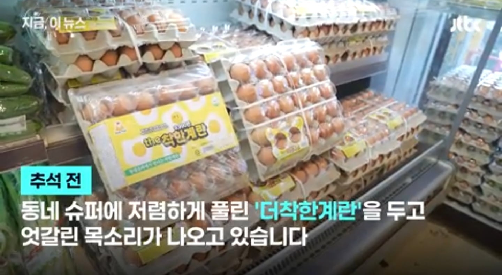
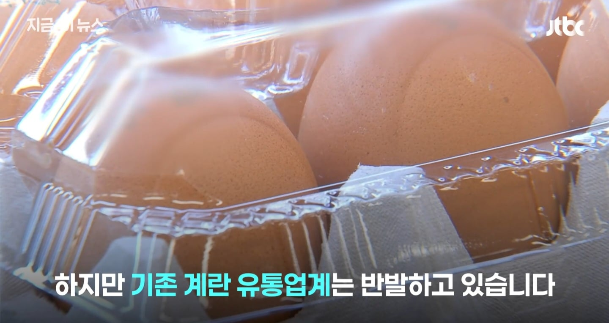
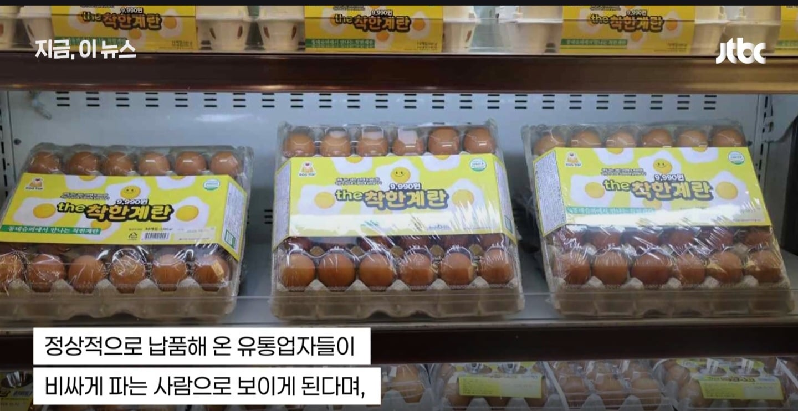
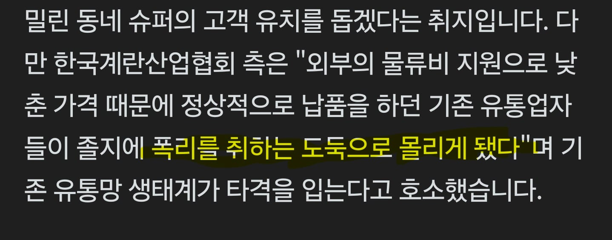

싼 계란이 생겨서 자기들이 '폭리를 취한 도둑'으로 몰렸다고 함




싼 계란이 생겨서 자기들이 '폭리를 취한 도둑'으로 몰렸다고 함
유통하는넘들이 소비자 주머니 잡고 억대연봉받는데 뭐 ㅋㅋ
멀쩡한 계란, 우유를 폐기해서 가격변동을 막은 ‘희생‘
그 희생값을 소비자가 부담해야 한다고욧!
개씹 버러지새끼들 ㅋㅋㅋㅋㅋㅋㅋ
어느순간 가격 ㅈㄴ 오른거 보면 맞지 않나? ㅋㅋㅋ
진짜 싹다 망해서 걍 자식세대까지 굶으면서 살았으면 좋겠네
과자하고 아이스크림 사이즈 줄인거는 그냥 넘어가?
알빠노
긁?
꼬우면 아시죠?
난 그 미국산 계란인가? 4천인가 5천에 샀는데 신선하고 맛있더라. 30개 5천 시벌 ㅋㅋㅋ 퀄이 구리면 말이나 안하지 퀄조차 좋아요
와 폭리 취했다니께 심장이 벌렁벌렁하드나!?